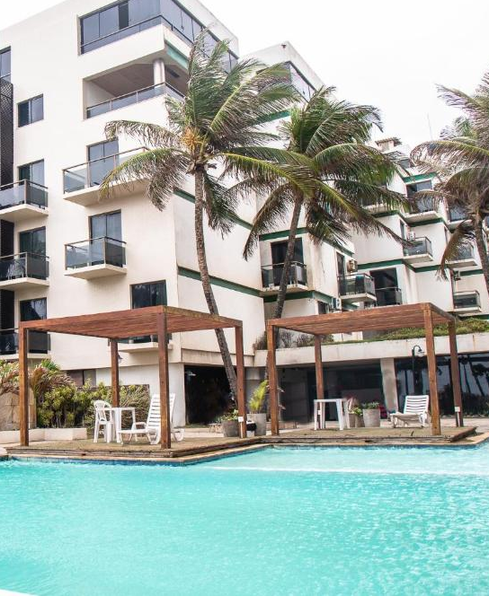
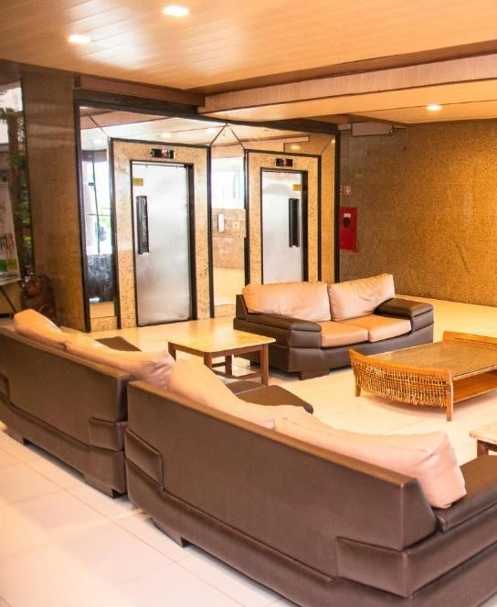

Dispondo de um parque aquático, 2 piscinas e um restaurante, o Sandrini Acqua Park
Hotel está situado em Maceió, bem em frente á Praia da Lagoa da Anta. Para sua
comodidade, o Wi-Fi e o estacionamento estão disponíveis, ambos gratuitos.
Os quartos do hotel possuem TV a cabo, ar-condicionado, frigobar e banheiro privativo
com chuveiro e secador de cabelo.
No Sandrini Acqua Park Hotel, você pode saborear diariamente um buffet de café da
manhã na sala de refeções, que inclui uma variedade de frutas da estação, pães e frios,
bem como uma seleção de bebidas quentes e frias.
O hotel está situado a 2,8 km do Shopping Maceió, a 8,2 km do estádio e a 2,4 km da Praia
da Jatica. O Aeroporto Internacional de Maceió - Zumbi dos Palmares está localizado a 17
km da propriedade.
Nós falamos a sua língua!
Sandrini Acqua Park Hotel tem recebido hóspedes da HotelCollege.com desde 20 de jul. de 2010.

